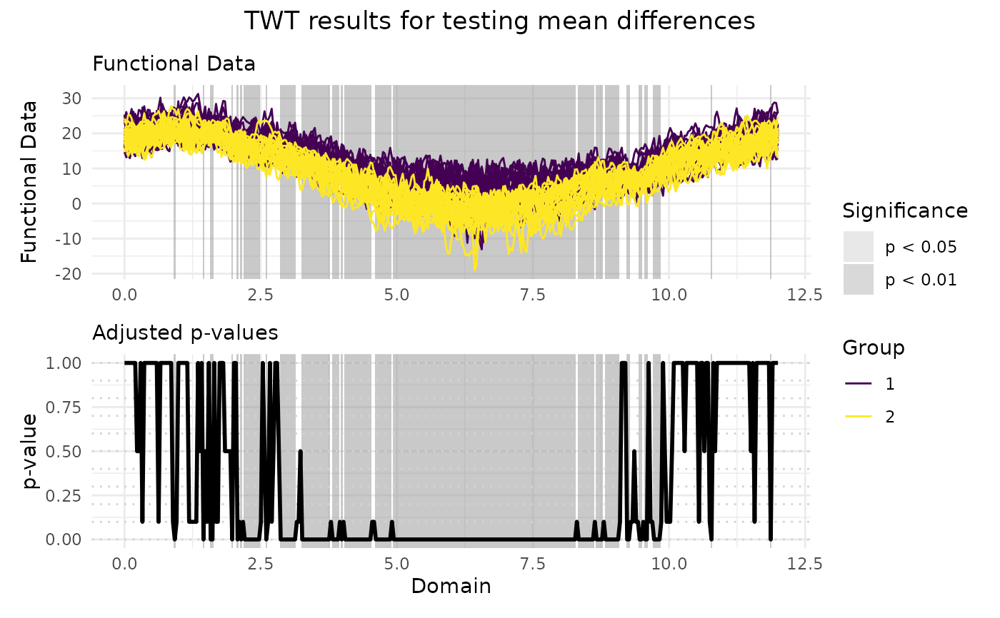
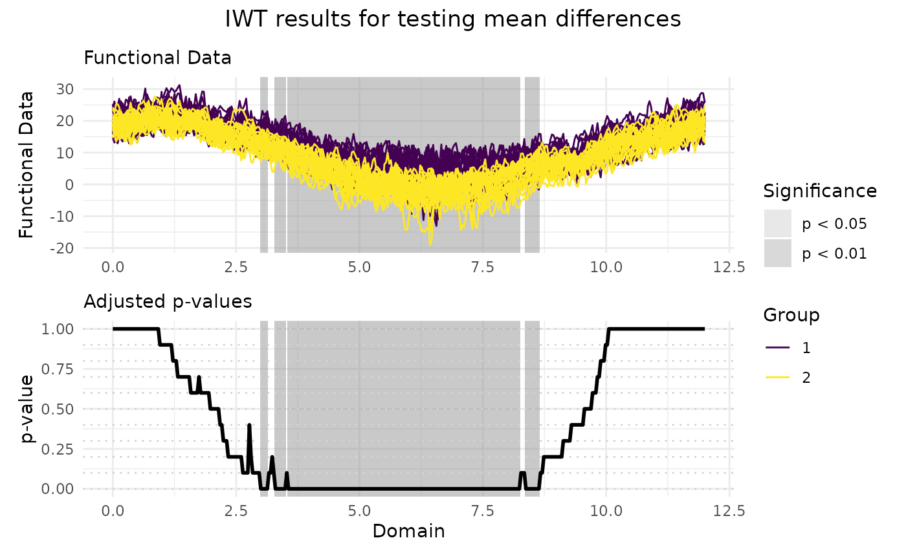

Local testing procedures for the functional two-sample test
Source:R/functional-two-sample-test.R
functional_two_sample_test.RdThe function implements local testing procedures for testing mean differences between two functional populations. Functional data are tested locally and unadjusted and adjusted p-value functions are provided. The unadjusted p-value function controls the point-wise error rate. The adjusted p-value function can be computed according to the following methods:
global testing (controlling the FWER weakly)
interval-wise testing (controlling the interval-wise error rate)
threshold-wise testing (controlling the FWER asymptotically)
partition closed testing (controlling the FWER on a partition)
functional Benjamini Hochberg (controlling the FDR)
Usage
functional_two_sample_test(
data1,
data2,
correction = c("Global", "IWT", "TWT", "PCT", "FDR"),
mu = 0,
dx = NULL,
n_perm = 1000L,
paired = FALSE,
alternative = c("two.sided", "less", "greater"),
standardize = FALSE,
verbose = FALSE,
aggregation_strategy = c("integral", "max"),
recycle = TRUE,
partition = NULL
)Arguments
- data1
Either a numeric matrix or an object of class
fda::fdspecifying the data in the first sample. If the data is provided within a matrix, it should be of shape \(n_1 \times J\) and it should contain in each row one of the \(n_1\) functions in the sample and in columns the evaluation of each function on a same uniform grid of size \(J\).- data2
Either a numeric matrix or an object of class
fda::fdspecifying the data in the second sample. If the data is provided within a matrix, it should be of shape \(n_2 \times J\) and it should contain in each row one of the \(n_2\) functions in the sample and in columns the evaluation of each function on a same uniform grid of size \(J\).- correction
A string specifying the correction method to perform the local functional testing procedure and adjust the p-value function. Choices are
"Global","IWT","TWT","PCT"or"FDR".- mu
Either a numeric value or a numeric vector or an object of class
fda::fdspecifying the functional mean difference under the null hypothesis. Ifmuis a constant, then a constant function is used. Ifmuis a numeric vector, it must correspond to evaluation of the mean difference function on the same grid that has been used to evaluate the data samples. Defaults to0.- dx
A numeric value specifying the step of the uniform grid on which the data are evaluated. If
NULL, the step is automatically inferred from the data. Defaults toNULL.- n_perm
An integer value specifying the number of permutations to use for the local testing procedure. Defaults to
1000L.- paired
A boolean value specifying whether a paired test should be performed. Defaults to
FALSE.- alternative
A string specifying the type of alternative hypothesis. Choices are
"two.sided","less"or"greater". Defaults to"two.sided".- standardize
A boolean value specifying whether to standardize the test statistic. Defaults to
FALSE.- verbose
A boolean value specifying whether to print the progress of the computation. Defaults to
FALSE.- aggregation_strategy
A string specifying the strategy to aggregate the point-wise test statistics for the correction procedure. Possible values are
"integral"and"max". Defaults to"integral".- recycle
A boolean value specifying whether to recycle the test statistic values across permutations for the IWT procedure. Defaults to
TRUE.- partition
An integer vector of length \(J\) specifying the membership of each point of the domain to an element of the partition. Only used and must be set if the
correctionargument is set to"PCT".
Value
An object of class fts containing the following components:
data: A numeric matrix of shape \(n \times J\) containing the evaluation of the \(n = n_1 + n_2\) functions on a common uniform grid of size \(p\).group_labels: An integer vector of size \(n = n_1 + n_2\) containing the group membership of each function.mu: A numeric vector of shape \(J\) containing the evaluation of the functional mean difference under the null hypothesis on the same uniform grid used to evaluate the functional samples.unadjusted_pvalues: A numeric vector of size \(J\) containing the evaluation of the unadjusted p-value function on the same uniform grid used to evaluate the functional samples.adjusted_pvalues: A numeric vector of size \(J\) containing the evaluation of the adjusted p-value functione on the same uniform grid used to evaluate the functional samples.correction_method: A string containing the correction method used to compute the adjusted p-value function.
Optionally, the list may contain the following components:
global_pvalue: A numeric value containing the global p-value. Only present if thecorrectionargument is set to"Global".pvalue_matrix: A numeric matrix of shape \(p \times p\) containing the p-values of the interval-wise tests. Element \(i, j\) contains the p-value of the test performed on the interval indexed by \(j, j+1 , \dots, j+(p-i)\). Only present if thecorrectionargument is set to"IWT".
References
For the global testing procedure:
Hall, Peter, and Nader Tajvidi. 2002. “Permutation Tests for Equality of Distributions in High-Dimensional Settings.” Biometrika 89 (2): 359–74.
Pini, Alessia, Aymeric Stamm, and Simone Vantini. 2018. “Hotelling’s T2 in Separable Hilbert Spaces.” Journal of Multivariate Analysis 167: 284–305.
For the partition closed testing procedure:
Vsevolozhskaya, Olga A, Mark C Greenwood, GJ Bellante, Scott L Powell, Rick L Lawrence, and Kevin S Repasky. 2013. “Combining Functions and the Closure Principle for Performing Follow-up Tests in Functional Analysis of Variance.” Computational Statistics & Data Analysis 67: 175–84.
Vsevolozhskaya, Olga, Mark Greenwood, and Dmitri Holodov. 2014. “Pairwise comparison of treatment levels in functional analysis of variance with application to erythrocyte hemolysis.” The Annals of Applied Statistics 8 (2): 905–25. https://doi.org/10.1214/14-AOAS723.
For the interval-wise testing procedure:
Pini, Alessia, and Simone Vantini. 2016. “The interval testing procedure: a general framework for inference in functional data analysis.” Biometrics 72 (3): 835–845.
Pini, Alessia, and Simone Vantini. 2017. “Interval-Wise Testing for Functional Data.” Journal of Nonparametric Statistics 29 (2): 407–24.
Pini, Alessia, Simone Vantini, Bianca Maria Colosimo, and Marco Grasso. 2018. “Domain-Selective Functional Analysis of Variance for Supervised Statistical Profile Monitoring of Signal Data.” Journal of the Royal Statistical Society Series C: Applied Statistics 67 (1): 55–81.
Abramowicz, Konrad, Charlotte K Häger, Alessia Pini, Lina Schelin, Sara Sjöstedt de Luna, and Simone Vantini. 2018. “Nonparametric Inference for Functional-on-Scalar Linear Models Applied to Knee Kinematic Hop Data After Injury of the Anterior Cruciate Ligament.” Scandinavian Journal of Statistics 45 (4): 1036–61.
For the threshold-wise testing procedure:
Abramowicz, Konrad, Alessia Pini, Lina Schelin, Sara Sjöstedt de Luna, Aymeric Stamm, and Simone Vantini. 2023. “Domain Selection and Familywise Error Rate for Functional Data: A Unified Framework.” Biometrics 79 (2): 1119–32.
For the functional Benjamini-Hochberg procedure:
Lundtorp Olsen, Niels, Alessia Pini, and Simone Vantini. 2021. "False discovery rate for functional data." TEST 30, 784–809.
Examples
# Performing the TWT for two populations
TWT_result <- functional_two_sample_test(
NASAtemp$paris, NASAtemp$milan,
correction = "TWT", n_perm = 10L
)
# Plotting the results of the TWT
plot(
TWT_result,
xrange = c(0, 12),
title = "TWT results for testing mean differences"
)

# Selecting the significant components at 5% level
which(TWT_result$adjusted_pvalues < 0.05)
#> [1] 29 45 49 50 61 64 66 68 69 70 71 72 73 74 75 76 80 88
#> [19] 89 90 91 92 93 94 95 96 100 101 102 103 104 105 106 107 108 109
#> [37] 110 111 112 113 114 115 117 118 119 120 122 124 125 126 127 128 129 130
#> [55] 131 132 133 134 135 136 137 138 141 142 143 144 145 146 147 148 149 151
#> [73] 152 153 154 155 156 157 158 159 160 161 162 163 164 165 166 167 168 169
#> [91] 170 171 172 173 174 175 176 177 178 179 180 181 182 183 184 185 186 187
#> [109] 188 189 190 191 192 193 194 195 196 197 198 199 200 201 202 203 204 205
#> [127] 206 207 208 209 210 211 212 213 214 215 216 217 218 219 220 221 222 223
#> [145] 224 225 226 227 228 229 230 231 232 233 234 235 236 237 238 239 240 241
#> [163] 242 243 244 245 246 247 248 249 250 251 252 254 255 256 257 258 259 260
#> [181] 261 262 264 265 266 267 269 270 271 272 273 274 275 276 281 282 288 289
#> [199] 291 292 296 297 298 299 328 361
# Performing the IWT for two populations
IWT_result <- functional_two_sample_test(
NASAtemp$paris, NASAtemp$milan,
correction = "IWT", n_perm = 10L
)
# Plotting the results of the IWT
plot(
IWT_result,
xrange = c(0, 12),
title = "IWT results for testing mean differences"
)

# Selecting the significant components at 5% level
which(IWT_result$adjusted_pvalues < 0.05)
#> [1] 92 93 94 95 96 101 102 103 104 105 106 107 109 110 111 112 113 114
#> [19] 115 116 117 118 119 120 121 122 123 124 125 126 127 128 129 130 131 132
#> [37] 133 134 135 136 137 138 139 140 141 142 143 144 145 146 147 148 149 150
#> [55] 151 152 153 154 155 156 157 158 159 160 161 162 163 164 165 166 167 168
#> [73] 169 170 171 172 173 174 175 176 177 178 179 180 181 182 183 184 185 186
#> [91] 187 188 189 190 191 192 193 194 195 196 197 198 199 200 201 202 203 204
#> [109] 205 206 207 208 209 210 211 212 213 214 215 216 217 218 219 220 221 222
#> [127] 223 224 225 226 227 228 229 230 231 232 233 234 235 236 237 238 239 240
#> [145] 241 242 243 244 245 246 247 248 249 250 251 255 256 257 258 259 260 261
#> [163] 262 263